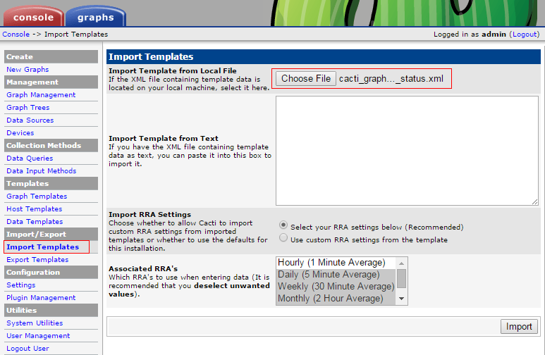

| 知乎专栏 ｜ 多维度架构 | 微信号 netkiller-ebook | QQ群：128659835 请注明“读者” |
Cacti is a complete network graphing solution designed to harness the power of RRDTool's data storage and graphing functionality. Cacti provides a fast poller, advanced graph templating, multiple data acquisition methods, and user management features out of the box. All of this is wrapped in an intuitive, easy to use interface that makes sense for LAN-sized installations up to complex networks with hundreds of devices.
homepage: http://www.cacti.net/
过程 6.1. Step by step Install Cacti
Install Cacti for
Ubuntu
netkiller@shenzhen:~$ sudo apt-get install cacti
┌────────────────┤ Configuring libphp-adodb ├────────────────────┐ │ │ │ WARNING: include path for php has changed! │ │ │ │ libphp-adodb is no longer installed in /usr/share/adodb. New installation path is now │ │ /usr/share/php/adodb. │ │ │ │ Please update your php.ini file. Maybe you must also change your web-server configuraton. │ │ │ │ <Ok> │ │ │ └─────────────────────────────────────────────────────┘
┌─────────────────────┤ Configuring cacti ├─────────────────────┐ │ │ │ cacti must have a database installed and configured before it can be used. If you like, │ │ this can be handled with dbconfig-common. │ │ │ │ If you are an advanced database administrator and know that you want to perform this │ │ configuration manually, or if your database has already been installed and configured, you │ │ should refuse this option. Details on what needs to be done should most likely be provided │ │ in /usr/share/doc/cacti. │ │ │ │ Otherwise, you should probably choose this option. │ │ │ │ Configure database for cacti with dbconfig-common? │ │ │ │ <Yes> <No> │ │ │ └───────────────────────────────────────────────────────┘
┌───────────────────┤ Configuring cacti ├──────────────────────┐ │ What is the password for the administrative account with which this package should create │ │ its MySQL database and user? │ │ │ │ Password of your database's administrative user: │ │ │ │ ___________________________________________________________________________________________ │ │ │ │ <Ok> <Cancel> │ │ │ └──────────────────────────────────────────────────────┘
reset password of admin
mysql> use cacti;
Reading table information for completion of table and column names
You can turn off this feature to get a quicker startup with -A
Database changed
mysql> select * from user_auth;
+----+----------+----------------------------------+-------+---------------+----------------------+-----------+-----------+--------------+----------------+------------+---------------+--------------+--------------+------------------------+---------+
| id | username | password | realm | full_name | must_change_password | show_tree | show_list | show_preview | graph_settings | login_opts | policy_graphs | policy_trees | policy_hosts | policy_graph_templates | enabled |
+----+----------+----------------------------------+-------+---------------+----------------------+-----------+-----------+--------------+----------------+------------+---------------+--------------+--------------+------------------------+---------+
| 1 | admin | 21232f297a57a5a743894a0e4a801fc3 | 0 | Administrator | on | on | on | on | on | 1 | 1 | 1 | 1 | 1 | on |
| 3 | guest | 43e9a4ab75570f5b | 0 | Guest Account | on | on | on | on | on | 3 | 1 | 1 | 1 | 1 | |
+----+----------+----------------------------------+-------+---------------+----------------------+-----------+-----------+--------------+----------------+------------+---------------+--------------+--------------+------------------------+---------+
2 rows in set (0.00 sec)
mysql> update user_auth set password=md5("chen") where id='1' and username='admin';
Query OK, 1 row affected (0.00 sec)
Rows matched: 1 Changed: 1 Warnings: 0
yum install cacti
创建数据库
# mysql -u root -p mysql> create database cacti; mysql> GRANT ALL ON cacti.* TO cacti@localhost IDENTIFIED BY 'cacti'; mysql> FLUSH privileges; mysql> quit; mysql -ucacti -pcacti cacti < /usr/share/doc/cacti-0.8.8b/cacti.sql
数据配置
# cat /etc/cacti/db.php <?php /* +-------------------------------------------------------------------------+ | Copyright (C) 2004-2013 The Cacti Group | | | | This program is free software; you can redistribute it and/or | | modify it under the terms of the GNU General Public License | | as published by the Free Software Foundation; either version 2 | | of the License, or (at your option) any later version. | | | | This program is distributed in the hope that it will be useful, | | but WITHOUT ANY WARRANTY; without even the implied warranty of | | MERCHANTABILITY or FITNESS FOR A PARTICULAR PURPOSE. See the | | GNU General Public License for more details. | +-------------------------------------------------------------------------+ | Cacti: The Complete RRDTool-based Graphing Solution | +-------------------------------------------------------------------------+ | This code is designed, written, and maintained by the Cacti Group. See | | about.php and/or the AUTHORS file for specific developer information. | +-------------------------------------------------------------------------+ | http://www.cacti.net/ | +-------------------------------------------------------------------------+ */ /* make sure these values refect your actual database/host/user/password */ $database_type = "mysql"; $database_default = "cacti"; $database_hostname = "localhost"; $database_username = "cacti"; $database_password = "cacti"; $database_port = "3306"; $database_ssl = false; /* Edit this to point to the default URL of your Cacti install ex: if your cacti install as at http://serverip/cacti/ this would be set to /cacti/ */ //$url_path = "/cacti/"; /* Default session name - Session name must contain alpha characters */ //$cacti_session_name = "Cacti"; ?>
配置httpd
# cat /etc/httpd/conf.d/cacti.conf # # Cacti: An rrd based graphing tool # # For security reasons, the Cacti web interface is accessible only to # localhost in the default configuration. If you want to allow other clients # to access your Cacti installation, change the httpd ACLs below. # For example: # On httpd 2.4, change "Require host localhost" to "Require all granted". # On httpd 2.2, change "Allow from localhost" to "Allow from all". Alias /cacti /usr/share/cacti <Directory /usr/share/cacti/> <IfModule mod_authz_core.c> # httpd 2.4 #Require host any Require all granted </IfModule> </Directory> <Directory /usr/share/cacti/install> # mod_security overrides. # Uncomment these if you use mod_security. # allow POST of application/x-www-form-urlencoded during install #SecRuleRemoveById 960010 # permit the specification of the rrdtool paths during install #SecRuleRemoveById 900011 </Directory> # These sections marked "Require all denied" (or "Deny from all") # should not be modified. # These are in place in order to harden Cacti. <Directory /usr/share/cacti/log> <IfModule mod_authz_core.c> Require all denied </IfModule> </Directory> <Directory /usr/share/cacti/rra> <IfModule mod_authz_core.c> Require all denied </IfModule> </Directory>
Cacti requires MySQL, PHP, RRDTool, net-snmp, and a webserver that supports PHP such as Apache.
sudo apt-get install rrdtool sudo apt-get install snmp snmpd sudo apt-get install php5-snmp
At first, install snmp for linux
wget http://www.cacti.net/downloads/cacti-0.8.7b.tar.gz
tar zxvf cacti-0.8.7b.tar.gz
mv cacti-0.8.7b /home/netkiller/public_html/cacti
mysqladmin --user=root create cacti
mysql -uroot -p cacti < cacti.sql
echo "GRANT ALL ON cacti.* TO cactiuser@localhost IDENTIFIED BY 'somepassword';" | mysql -uroot -p
echo "flush privileges;" | mysql -uroot -p
vi include/config.php
例 6.1. cacti config.php
$database_type = "mysql"; $database_default = "cacti"; $database_hostname = "localhost"; $database_username = "cactiuser"; $database_password = "somepassword"; $database_port = "3306";
crontab -e
*/5 * * * * php /var/www/neo.6600.org/html/cacti/poller.php > /dev/null 2>&1
or
/etc/crontab
*/5 * * * * nobody php /home/netkiller/public_html/cacti/poller.php > /dev/null 2>&1
mkdir -p /var/log/cacti/
configure cacti
http://docs.cacti.net/plugins
下载插件解压到下面目录
cd /usr/share/cacti/plugins
进入Console -> Plugin Management配置插件
模板的导入步骤是首先点击"Choose File"按钮选择文件
|  |
然后点击Import按钮
 |
确认导入事项，最后点击Import按钮。
完成倒入后，配置数据采集脚本，请继续阅读下面章节。
wget http://forums.cacti.net/download/file.php?id=12676
http://forums.cacti.net/about26458.html
nginx 配置
location /nginx_status {
stub_status on;
access_log off;
allow 22.82.21.12;
deny all;
}
yum -y install perl-FCGI perl-FCGI-Client perl-LWP-Protocol-http10 git clone https://github.com/oscm/Cacti.git cd Cacti cp Templates/php-fpm/get_php_fpm_status.pl /usr/share/cacti/scripts/ chmod +x /usr/share/cacti/scripts/get_php_fpm_status.pl
配置连接协议
# vim +/mode /usr/share/cacti/scripts/get_php_fpm_status.pl #my $mode = MODE_FCGI; 注释此行 my $mode = MODE_HTTP; 添加此行
配置 php-fpm.conf 文件
; Default Value: not set pm.status_path = /status
配置nginx
location ~ ^/(status|ping)$ {
access_log off;
allow 22.82.21.12;
deny all;
fastcgi_pass 127.0.0.1:9000;
fastcgi_param SCRIPT_FILENAME $fastcgi_script_name;
include fastcgi_params;
}
Template: http://code.google.com/p/mysql-cacti-templates/
$ cd /usr/local/src/ $ wget http://mysql-cacti-templates.googlecode.com/files/better-cacti-templates-1.1.8.tar.gz $ tar zxvf better-cacti-templates-1.1.8.tar.gz $ cd better-cacti-templates-1.1.8/ $ cp scripts/ss_get_mysql_stats.php /usr/share/cacti/scripts/
default password
vim /usr/share/cacti/site/scripts/ss_get_mysql_stats.php.cnf <?php $mysql_user = "root"; $mysql_pass = "s3cret"; ?>
Import Templates
倒入下面模板 templates/cacti_host_template_x_mysql_server_ht_0.8.6i-sver1.1.8.xml
"Import/Export" -> "Import Templates" -> "Import Template from Local File" -> Import
设置模版
Templates -> X MyISAM Indexes DT X MyISAM Key Cache DT X MySQL Binary/Relay Logs DT X MySQL Command Counters DT X MySQL Connections DT X MySQL Files and Tables DT X MySQL Handlers DT X MySQL Network Traffic DT X MySQL Processlist DT X MySQL Query Cache DT X MySQL Query Cache Memory DT X MySQL Replication DT X MySQL Select Types DT X MySQL Sorts DT X MySQL Table Locks DT X MySQL Temporary Objects DT X MySQL Threads DT X MySQL Transaction Handler DT -> Custom Data Hostname Username #单击复选框，并输入默认用户名 Password #单击复选框，并输入默认密码 Port -> Save
easy_install redis
https://github.com/oscm/Cacti.git
cp redis-stats.py /usr/share/cacti/scripts/
测试采集脚本
# python redis-stats.py 172.18.52.163 total_connections_received:578761 connected_clients:14 used_memory:870032 expires:47 keys:47 total_commands_processed:1814080